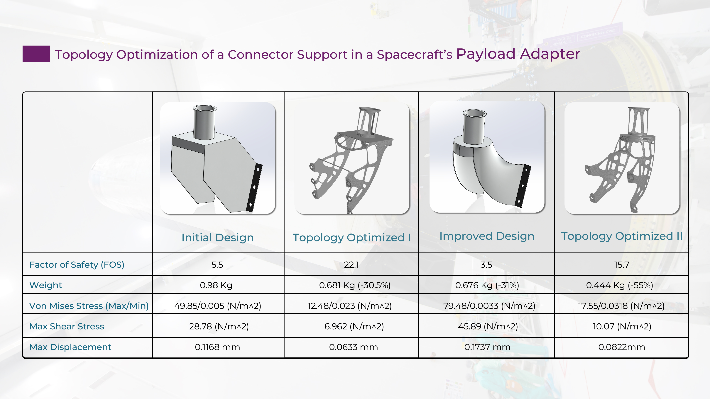

A collection of hands-on implementations exploring core Scientific Machine Learning (SciML) techniques using PyTorch. This project covers Multilayer Perceptrons (MLPs), Physics-Informed Neural Networks (PINNs), Deep Operator Networks (DeepONets), and Fourier Neural Operators (FNOs), with applications to solving engineering and physics problems.
View Project →A comparative study of different numerical approaches for solving the classic lid-driven cavity flow problem. The project investigates solution accuracy, convergence, and computational performance across multiple CFD implementations to better understand the strengths and limitations of each method.
View Project →A C++ implementation of the D2Q9 Lattice Boltzmann Method (LBM) for simulating two-dimensional Poiseuille channel flow. This project extends the concepts learned from the Navier–Stokes channel flow solver by implementing the same physical problem using the Lattice Boltzmann framework and comparing the numerical approaches.
View Project →A C++ implementation of the incompressible Navier–Stokes equations for the two-dimensional lid-driven cavity problem. Building upon concepts developed in the Navier–Stokes cavity flow project, this solver focuses on writing an efficient and modular CFD code while improving understanding of pressure–velocity coupling and numerical discretization.
View Project →A complete implementation of the well-known "12 Steps to Navier–Stokes" learning series in Python. Beginning with one-dimensional linear convection and progressing to the two-dimensional incompressible Navier–Stokes equations, this project builds a strong foundation in computational fluid dynamics and numerical methods.
View Project →Competition submission for the Altair Topology Optimization Challenge involving the lightweight redesign of a spacecraft connector support. The project applies finite element analysis and topology optimization techniques to minimize structural mass while satisfying mechanical performance and manufacturability requirements.
Watch Video →